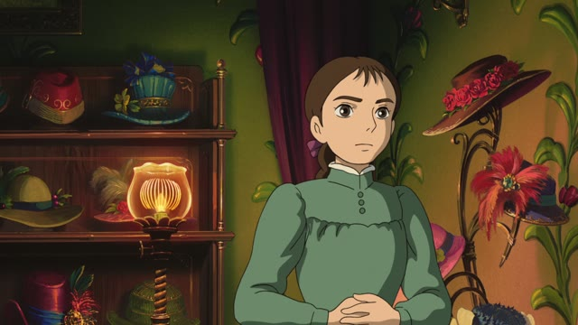
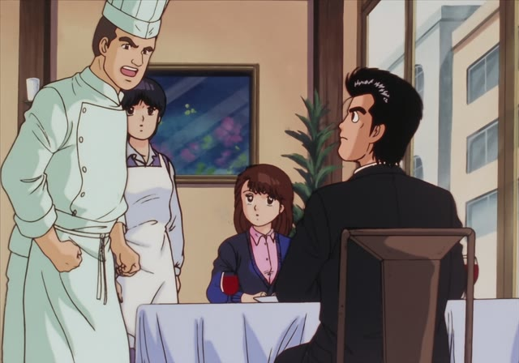
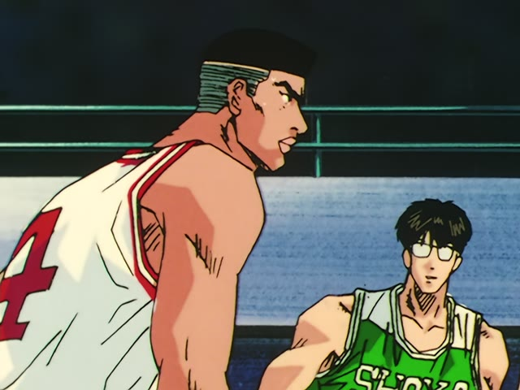
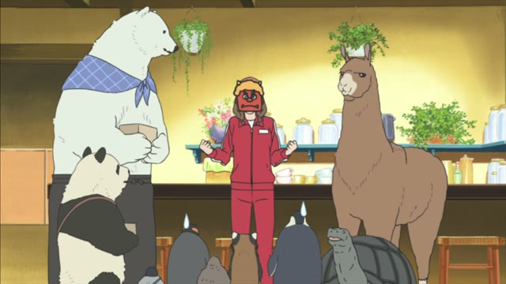

～たつもり
| Polite | ～たつもりです ～たつもりでした looking back: "I thought I had" |
|---|---|
| Casual | ～たつもりだ・～たつもり ～たつもりだった looking back: "I thought I had" |
Same meaning: "I believe I did". Only the politeness changes.
Noun before it? Add の. な-adjective? Add な.
| Word | Add | Ending | ||
|---|---|---|---|---|
| Noun | 学生 | の | つもり | Thinks he's still a student |
| な-adjective | 静か | な | つもり | Thinks he's being quiet |
| Verb | 行った | – | つもり | Thinks he went |
| い-adjective | 高い | – | つもり | Thinks he's tall |

Howl's Moving Castle
すいません 鍵をかけたつもりだったんですが…
"Sorry, I thought I'd locked the door..."
After something already done (the た-form), つもり isn't a plan any more: it means "I believe I did", "I thought I did". It often hints you were wrong.
Quick test: if what comes before つもり can't be a plan, it means belief. A finished action can't be planned (行ったつもり, "I think I went"), and neither can a state (分かるつもり, "I think I understand"). For the plan meaning, see ～つもりだ.
On this card, Sophie thought she'd locked the shop, but a customer just walked in. つもりだった looks back: "that's what I thought".
Demon Slayer · Entertainment District Arc · Episode 6
それで止めたつもり？
"You think that stopped me?"
On this card, the demon mocks him: he thinks he's stopped her, but he hasn't. ～たつもり？ as a question is a common taunt: "you think you did, don't you".
Quick Examples
Your coworker never got the email.
メールを送ったつもりでした。
"I thought I'd sent the email."
You believed it, but it didn't happen.
PoliteYou studied hard, but failed the test.
勉強したつもりだったのに…
"I thought I'd studied..."
CasualGrandpa signs up for a marathon.
まだ若いつもりだよ。
"I still think I'm young."
い-adjective: つもり comes straight after, no た needed. You can't plan being young.
CasualA new guy gives everyone orders.
社長のつもり？
"Does he think he's the boss?"
After a noun, add の.
CasualWith and without
鍵をかけた。
I locked it. A fact.
鍵をかけたつもり。
I think I locked it. That's what I believe, but maybe I didn't.
Examples from Media
1 Litre of Tears · Episode 11
亜也の気持ち、分かっているつもりでした。
"I thought I understood how Aya felt."
A mother looking back: she believed it, and now she isn't sure.

Oishinbo · Episode 57
ちゃんと まともなフォンを使ったつもりです
"I'm sure I used a proper stock."
The chef defends himself: that's what he believes he did.
Kekkon Dekinai Otoko · Episode 12
それで勝ったつもりですか
"You think that means you've won?"
The polite version of the taunt.
Legal High · Season 2, Episode 7
あなたの置かれている状況は理解しているつもりです
"I believe I understand the position you're in."
理解している is a state, so no た: "as far as I can tell, I understand".
Dungeon Meshi · Episode 16
うまいことを言ったつもりか？
"You think that was clever?"
Literally "do you think you said something clever?"

Slam Dunk · Episode 37
俺なりに 赤木という男を知ってるつもりだ
"In my own way, I think I know what kind of man Akagi is."
知ってる is a state, so no た here either.

Shirokuma Cafe · Episode 41
それは赤鬼のつもりかな
"Is that supposed to be a red demon?"
Noun + の: "is he meant to be one?"
Ocean Waves
私 パパの味方のつもりだった
"I thought I was on Dad's side."
Next line: "but Dad wasn't on mine".